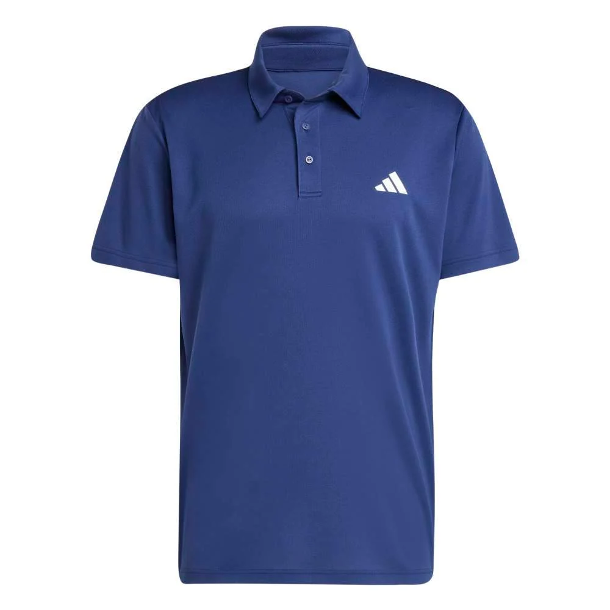
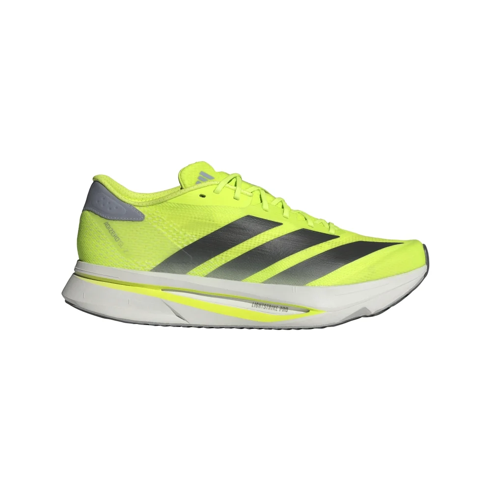

Chomba Adidas Fab
Polo Hombre
Conocé Chomba Adidas Fab Polo Hombre, una propuesta de indumentaria seleccionada para armar conjuntos para actividad física o uso cotidiano. Forma parte de nuestra selección de Tenis, con una propuesta indicada para hombre. Encontrá en la ficha las variantes disponibles y elegí la opción que mejor se adapte a vos.
Last updated 3 mins ago

Zapatilla Adidas Adizero
Sl2 M de Hombre
Adizero Sl2 M Fabricado Con Materiales Seleccionados De Alta Calidad, Garantiza Una Durabilidad Superior Y Un Rendimiento Consistente. Es Una Solución Práctica Y Segura Que Se Adapta A Diversas Necesidades De Uso.
Last updated 3 mins ago

Campera Puma Run
Favorite De Hombre
Ligera, funcional y lista para acompañarte en cada entrenamiento. La campera PUMA Run Favorite combina un diseño minimalista con materiales cómodos y livianos para que te mantengas concentrado en tu rendimiento. Su capucha integrada y cierre frontal completo ofrecen mayor cobertura, mientras que el ajuste cómodo permite moverte con total libertad tanto en running como en actividades diarias.
Last updated 3 mins ago

Zapatillas Clavos Atletismo Puma Evospeed Distance 11 Naranja
Las evoSPEED Distance 11 están diseñadas para los atletas de pista de resistencia que buscan llegar lejos. Están diseñadas específicamente para distancias entre 800 m y 10 km, y también son una excelente opción para carreras con obstáculos. Una caña interna de TPU se combina con una placa ligera de Pebax® en forma de U y cinco clavos extraíbles para un mejor agarre y propulsión.
Last updated 3 mins ago

PUMA Visera de running
Everyday En Talle
Cuidate del sol con esta visera de running. Su visera curvada te ayuda a ver con claridad, para que puedas concentrarte en el camino por delante.
Last updated 3 mins ago

Shorts de running VELOCITY
12cm para hombre
Dale rienda suelta a todo tu potencial con los nuevos shorts de running PUMA, que presentan un largo de pierna de 12cm.
Last updated 3 mins ago